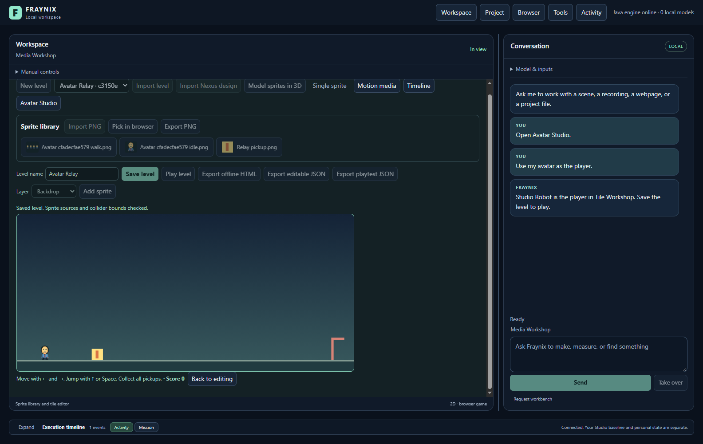
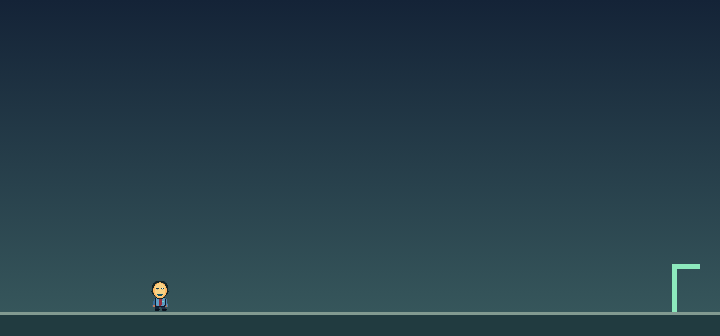

Play a saved avatar in a portable tile level
Download the sample and open it in a browser. Hold Right Arrow to collect the pickup and reach the exit.

The saved avatar at the start of the level inside the workspace

The inspected walking tick after collecting the pickup
System files
Open source